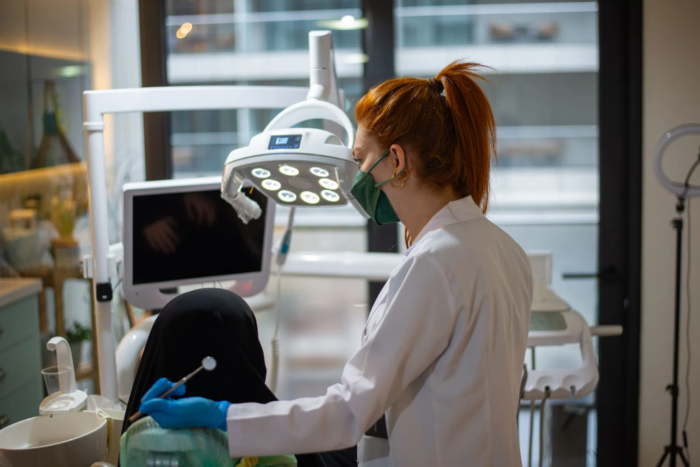

Ağız ve Diş Sağlığı Polikliniği · Yenişafak - Cinkaya
Fotoğraf temsilîdir
Her gün, akşam 22.00'ye kadar.
Hafta içi iş çıkışında, hafta sonu rahatça. Randevu için arayın ya da WhatsApp'tan yazın.
Çalışma saatleri: her gün 09.00 - 22.00
Tedaviler
Kontrolden kanal tedavisine.
Başlıklar genel diş hekimliği alanlarıdır. Yayında kliniğinizin kendi listesi, her başlığın altında kısa ve sade bir açıklamayla durur.
- 01Muayene ve kontrol
- 02Diş temizliği
- 03Dolgu
- 04Kanal tedavisi
- 05İmplant
- 06Ortodonti
- 07Çocuk diş hekimliği

Çalışma saatleri
09–22haftanın yedi günü
Cumartesi ve pazar da açık.
Mesaiden sonra ya da hafta sonu gelmek isteyenler için. Bugünün satırı işaretlidir.
Ulaşım ve iletişim
Yenişafak - Cinkaya, Denizli.
Google'da "diş hekimi" arayan biri telefonu, WhatsApp'ı ve yol tarifini tek dokunuşla bulur.
Randevu
0533 733 96 20Arayabilir ya da WhatsApp'tan yazabilirsiniz; klinik size uygun saati söyler.
Adres
Yenişafak - Cinkaya, Denizli
Açık adres ve kat bilgisi yayında eklenir. Yol tarifi Google Haritalar'daki kayıtlı konumunuza gider.